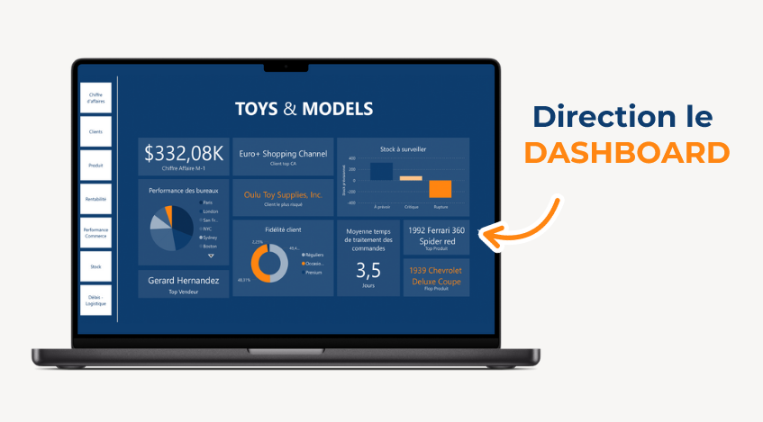

Contexte : projet de data analyse décisionnelle à partir d’une base métier existante.
Objectif : transformer les données en indicateurs exploitables et concevoir un tableau de bord clair, fiable et maintenable.
Compétences démontrées : extraction et préparation des données, requêtes SQL, structuration pour le reporting, modélisation analytique, définition de KPIs et visualisation pour l’aide à la décision.